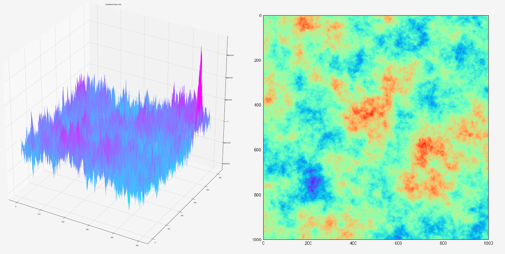
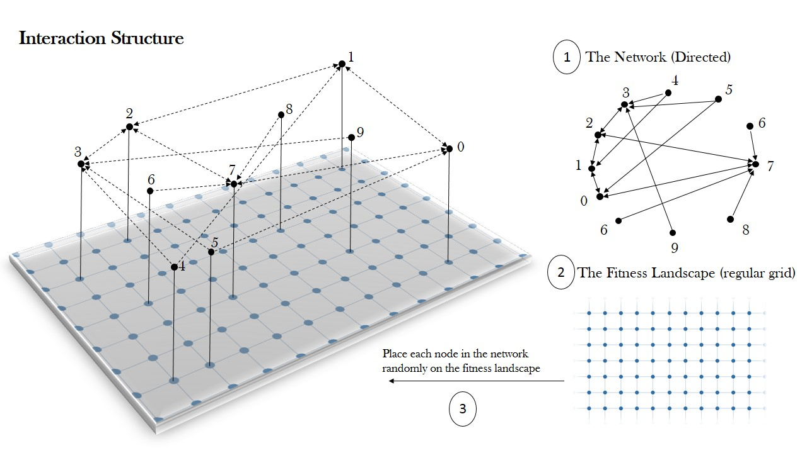

Modeling Complex Economic Systems Using Fitness Landscapes: Theory, Data and Simulations.
Developed initially in evolutionary biology, the concept of fitness landscape has found numerous applications in studying economic systems. The idea was initially conceived by the seminal work of Sewall Wright and popularized successively thanks to the work of Stuart Kauffman. Fitness landscapes offered a framework to understand how the emergence, development and evolution of solutions to a complex economic phenomena can be perceived as an adaptive search, carried out by an agent or a collection of agents, for an optimal solution in a given space of solutions. The purpose of this project will be to explore the application of the concept of fitness landscapes to studying complex economic phenomena and provide guidance for future research.The project is structured in three main parts.
In the first part, I will review the literature on the structure and dynamics of fitness landscapes. The different definitions and theories of fitness landscapes will be defined, illustrating the difference between random and deterministic landscapes. Successively, an illustration is provided regarding the main metrics used in fitness analysis, like adaptive walk, random walk, long jumps, correlation length, local and global optima, ruggedness, walk entropy, basins of attraction and other. I will also investigate the internal and external factors that might change the structure of fitness landscapes (for example the expansion of the landscape or changing fitness values).
In the second part, the current project investigates existing and possible applications of the concept of fitness landscapes in economic modeling, and in particular in the fields of technological innovation, management and finance. Related concepts like production recipe, recombination, product space, technological graphs, radical vs. incremental innovations, exploration vs. exploitation, observational learning, evolutionary agent-based models and other are presented with particular focus on their meaning in economics. Finally, some perspectives are discussed regarding the extent to which realistic fitness landscapes can be modeled in economics using available data.
In the last part, the project discusses some of the algorithmic issues related to the simulation of fitness landscapes. Concepts like covariance matrices, random fields, Cholesky decomposition, Perlin noise , circulant embedding are discussed in relation to the simulation of random landscapes. The paper will show some of the different visualization tools used to plot fitness landscapes in different dimensions.
Evolution of Innovations on Technological Graphs
In collaboration with Rosario Mantegna
Technological innovation is a complex problem in the sense that it involves a multiplicity of solutions, independence between the elements of a solution, uncertainty and inefficiency in the search process and in some cases a multiplicity of problem solvers. For this reason, a wide range of scholars, from economists to biologists to physicists and others, have investigated the problem of innovation while adopting different perspectives. Among the different ways of studying innovation is by focusing on facts, like the amount of investment in R&D, the number of patents per county or sector and the different classes of innovations. Another line of research focuses not only on facts but on the discovery and evolutionary process behind technological innovations.
In this research project, which is part of my PhD thesis, I will focus on the second line of research mentioned above by investigating a particular process of innovation in firms that is usually referred to as “Collective Invention”.The idea of collective invention assumes that firms do not search in isolation, rather given the commercial incentives, the financial constraints and the ability to observe each other, firms search as members of simultaneously searching organizations.
The model is made mainly of two main parts. The first considers the modeling of the space of technological solutions using the concept of fitness landscapes. A fitness landscape is a mathematical mapping from a configuration space into real numbers, where the configuration space is usually equipped with notions like neighborhood, correlation and ruggedness. A firm is said to innovate by undertaking a combinatorial optimization process that consists of finding an optimal solution on the technological landscape.
.The second part of the project involves the modeling of different communication networks with different topologies. The goal is to understand whether the network structure, and in particular the efficiency of the network, plays a role in the final outcome where the final outcome is the final average fitness of the searching population. Different search processes will be analyzed with different initial conditions.
Growth Dynamics in Temporal Networks
In collaboration with Reza Jafari and Rosario Mantegna - to be submitted to Pysical Review E
Analyzing complex systems using network theory is a main trend in mathematical physics. In many cases, activities like communicating on social networks, trading in
markets and search into the internet are events that happen in specific temporal framework. To understand the temporal dimension of complex networks, the concept of temporal networks has been introduced. Recent literature on temporal networks has explained different temporal features of real networks like, for example, different types of temporal networks, measures of temporal topological structure , spreading dynamics, and compartmental models.
We believe that one of the most interesting problems in temporal networks is the modeling of the complex behavior observed for vertices, i.e. the drivers behind each node's decision to set up certain links with certain other nodes and the magnitude of the links that are set up. For example, in marketing recommender systems, nodes (consumers) are expected to establish temporal links with products based on preferences, item's general acceptance, and inuence from social friends . In finnancial markets, agents may establish links through time with others based on trust.
In this paper, we propose a model to explain the temporal dynamics of link (event) formation in temporal networks.
We present our model as a network model with a preferential connection component, where a node is chosen at random to participate in an event with a preferential tendency to connect with the most active nodes. Active nodes are nodes whose cumulative degree is high, where cumulative degree is the sum of all historical events in which a node participated. In the second section, in addition to the preferential component which is a global property, we add a memory as a second component in
the node's decision to establish a link. Memory is included to reflect the localization effect in the decision of nodes to participate in temporal events. Numerical results are presented and discussed for both models. In the second version of our model, memory is introduced into the system by using the theory of fractional calculus. Fractional Calculus allows us to express an ordinary differential equation with memory using a fractional-order equation that does not include explicitly the concept of memory. Several studies, in an attempt to describe the effect of past on the present events, have employed fractional integrals and derivatives as a generalization of ordinary differential integral operators to non-integer ones.
Analyzing the Financial Network of Syndicated Lending
In collaboration with Torsten Heinrich
In the economic literature, the existence of financial markets has always been justified in terms of their crucial role in the efficient allocation of investment resources and the sharing and managing of risks. In principal line, economic equilibrium models, for example the Warlas model, assumes that transactions in financial markets are conducted through a central unit of exchange. However, despite the several institutions that have been established to centralize exchanges in many economies, most of the transactions in financial markets are still conducted in a decentralized way. Given this fact, there have been several attempts by economists and complex systems experts to study the structure of financial markets as a network of credit relationships (Gale & Shachar 2007).
Financial networks are not complete. If they were complete, then every market participant would connected to everyone else and the network would be no different from a centralized market as in the Warlas Equilibrium. For this reason, studying the structure of the financial networks would can result very useful for understanding and regulating financial markets. In addition to that, the recent increase in the availability of data about credit relationships and financial transactions has made it possible for financial networks literature to gain practical importance.
In this research, we are going to analyze one of the most interesting financial markets in the world, the so called “Syndicated Loans Market”. Syndicated Lending represents an efficient way of geographical and institutional risk sharing. On the informational level, syndicated loans usually involve complex information processing and, recently, financial innovation has enabled the use of structured finance products in the construction of these loans. Given these emerging complexities, and the risk of asymmetric information, we assume that trust among the participants in a syndicated facility is a crucial element in the well-functioning of this market. Therefore, this research project represents an attempt to analyze the trust component in the bilateral credit relationships between lenders in a syndicate by investigating the frequency of trading which involves the same banks. We investigate how the network of lenders has evolved through time and whether financial crisis has an impact on the topology of the syndicated lending network.
The data used in our research is the DealScan dataset published by Thompson Reuters which covers the international Syndicated loan flows between 1988 and 2013. The dataset includes the amounts of each facility (the grant of availability of money, i.e the Loan), the participant banks, the country of syndication (the country of the arranger), and the share and amount of each participant. The count for facilities is 263299 with a total number of participating banks of 17377.
Gale, D., & Shachar, K. (2007). Financial Networks . American Economic Review 97(2), 99-103.
.
A General Theory of Financial Innovation Processes
In collaboration with Keren Arthur - Under revision by Financial Innovation (Springer)
Increasing attention has been paid to the topic of financial innovation since the last financial crisis of 2008. Despite the wide acceptance in literature of the benefits of financial innovations to the real economy (e.g. Shiller, 2012, 2013; Van Horne, 1985, 1986, 1992; Finnerty, 1992; Merton, 1992; Levine, 2005), the crisis of 2008 has made financial innovation a focus in a time of re-evaluation and re-conceptualization (Engelenetal., 2010, Greenwood and Scharfstein, 2013). Some researchers have claimed that misuse or abuse of financial innovations have been one of the factors leading to the 2008 financial crisis (Bozand Mendoza, 2014; Hausmanand Johnston, 2014). Others started to examine what became called the "Dark Side" of financial innovations (Allen, 2012, Diaz-Rainey and Ibikunle, 2012; Henderson and Pearson, 2011). Allen (2012) finds empirical evidence suggesting that financial innovation increases the complexity of transactions, resulting in opportunities to explore questions of interest to the consumers of financial services. For this reason, a wave of pessimism has been raising concerning the long term effect of the increasing complexity of financial innovations. Regulation has been increasing in complexity (Acharya etal. 2010), calls for responsible financial innovation and good governance has also been notably increasing (Armstrong and Muniesa, 2012; Asante et al. 2014). On the other hand, the market competition for financial innovation is undergoing several changes thanks to the Fintech startups who are introducing financial innovations that in many cases promise to deliver better and safer services than traditional financial institutions.
All of these factors and others create new challenges for the management and regulation of financial innovations and thus a more detailed understanding of the complexity of the financial innovation process is a crucial element in the new market context. Shiller (2009 FT) argued that bad complexity should be distinguished from good complexity in the financial innovation process. Nevertheless, as several authors point out (Anderloni and Bongini, 2009; Frame and White, 2004), studies on financial innovation are few and does not provide a consistent framework for understanding the financial innovation process.
Mention and Torkkeli (2012) recently suggested the need for a more holistic approach to think of financial innovation. By addressing the questions of what, why and how, they open what they call the financial innovation black box that highlights unique characteristics of financial innovation and shed light on how innovation occurs in financial services. This paper goes a step further to open the black box of financial innovations by pointing out that there is need for a more detailed theory; one that addresses the increasing complexity of the financial innovation process derived from factors such as the development of technology, institutions, the startup revolution and historical and economic variables. The importance of such a detailed theory of financial innovations is also justified by the recent evolution of the management approach towards a "contextual approach", where innovating companies adapt their innovation practices to their context and (Ortt and van der Duin, 2008).
The hypothesis that this paper is conceptually discussing is whether it is possible to construct a unifying theory that explains the process of financial innovation in general and, if not, provide an alternative to a general theory. By general we mean a theory that is able to encompass the observed complexities and diversities in the financial innovation process. To answer this question we follow the research method proposed by Poole and Van de Ven (1989, 1995). Poole and Van de Ven(1989,1995)examined the variety of theories proposed to understand organizational change and innovation and the question that they tried to answer was how to make sense of the multiplicity of these theories. They further suggested that instead of trying to stipulate one theory as the best choice to explain innovation or to derive a single general theory of change, it would be more informative and useful to consider a set of theories and models that can be combined and applied to understand innovation and change. We believe that this research method is suitable for understanding financial innovations for two reasons: first, financial innovation is a multifaceted process, involving different actors and perspectives, and incorporating different and dynamic generative mechanisms. Second, several theories have been proposed for explaining financial innovation, however, confusion still exists as to when they apply, what their limitations are and how they relate to each other.
This paper begins with a discussion of the meaning of financial innovation. Successively, we provide an overview of the existing classification schemes and propose our own classification. We then turn to exploring the differences between financial and other types of innovations, describing features that are unique to financial innovations. In the section that follows, we identify and examine the existing objects of study in the financial innovation literature; we group them under four main concepts and illustrate the degree of development of each. We argue that the existing approach, which relies on isolated objects of study of financial innovation, is likely to lack several of the theoretical connections and complexities that are essential to understand and manage financial innovations, thus making it difficult for a general (detailed) theory of financial innovations to emerge. In the last section, we introduce the concept of meta-theory of financial innovation, by identifying and explaining four theories of development. We provide several examples of how this approach results in more detailed and complex theories that better explain the phenomena of financial innovation and close with a conclusion and some recommendations for future research.
.